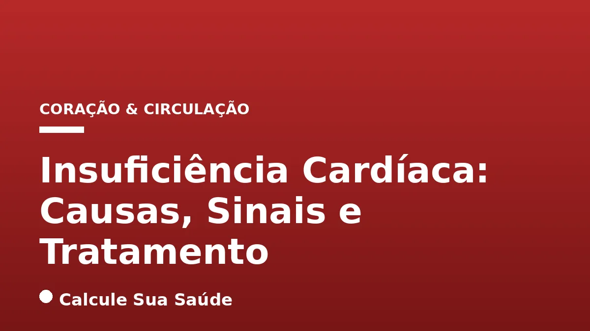

Aviso médico importante
Este conteúdo é educativo e informativo e não substitui a consulta, o diagnóstico ou o tratamento de um profissional de saúde. Em caso de sintomas, procure orientação médica.
Índice do Artigo
- 1. O Que é Insuficiência Cardíaca? Uma Definição Abrangente
- 2. Classificação da Insuficiência Cardíaca pela Fração de Ejeção
- 3. Epidemiologia da Insuficiência Cardíaca no Brasil
- 4. Fisiopatologia da Insuficiência Cardíaca
- 5. Principais Causas e Fatores de Risco
- 6. Sinais e Sintomas: Como Reconhecer a Insuficiência Cardíaca
- 7. Diagnóstico Preciso: Exames Essenciais para a Insuficiência Cardíaca
- 8. Prevenção da Insuficiência Cardíaca: Um Estilo de Vida Protetor
- 9. Abordagens Terapêuticas: O Tratamento da Insuficiência Cardíaca
- 10. Medicamentos Fundamentais no Tratamento da IC
- 11. Terapias Avançadas e Intervenções Cirúrgicas
- 12. Manejo da Insuficiência Cardíaca: Estilo de Vida e Autocuidado
- 13. Mitos e Verdades sobre a Insuficiência Cardíaca
- 14. A Importância do Acompanhamento Médico Contínuo
- 15. Perspectivas Futuras no Tratamento da IC
- 16. Perguntas frequentes
A insuficiência cardíaca (IC) é uma síndrome clínica complexa e progressiva que representa um desafio significativo para a saúde pública global e, em particular, no Brasil. Caracteriza-se pela incapacidade do coração de bombear sangue em quantidade suficiente para suprir as necessidades metabólicas do corpo, ou de relaxar adequadamente para receber o sangue, resultando em uma série de sintomas debilitantes e impactando drasticamente a qualidade de vida dos pacientes.
Compreender a insuficiência cardíaca é fundamental, não apenas para aqueles que já vivem com a condição, mas para a população em geral, dada a sua alta prevalência e o potencial de prevenção. Este artigo aprofundará nas causas subjacentes, nos sinais de alerta que exigem atenção médica, nas abordagens diagnósticas e nas opções de tratamento baseadas em evidências científicas, visando capacitar os leitores com informações cruciais para a gestão e prevenção dessa doença cardiovascular.
Nosso objetivo é desmistificar a insuficiência cardíaca, fornecendo um panorama claro e cientificamente embasado, alinhado às diretrizes mais recentes da cardiologia. Abordaremos desde os conceitos básicos e classificações até as estratégias de prevenção e os avanços terapêuticos, sempre com o rigor e a seriedade que um tema de saúde tão vital exige.
Em resumo
- A insuficiência cardíaca ocorre quando o coração não consegue bombear ou receber sangue de forma eficiente para atender às demandas do corpo, levando ao acúmulo de fluidos e sintomas como fadiga e falta de ar.
- É classificada em ICFEr (fração de ejeção reduzida), ICFEIr (levemente reduzida) e ICFEp (preservada), com base na capacidade de bombeamento do ventrículo esquerdo.
- As principais causas incluem doença arterial coronariana, infarto, hipertensão, diabetes, valvulopatias e miocardiopatias, muitas delas preveníveis ou controláveis.
- Os sinais de alerta comuns são cansaço extremo, falta de ar, inchaço nas pernas e abdômen, e batimentos cardíacos irregulares, exigindo avaliação médica imediata.
- O diagnóstico envolve exame físico, eletrocardiograma, ecocardiograma e exames de sangue, como o peptídeo natriurético.
- O tratamento é multifacetado, combinando medicamentos, mudanças no estilo de vida e, em casos avançados, terapias como ressincronização cardíaca ou transplante, com o objetivo de melhorar a qualidade de vida e a sobrevida.
1. O Que é Insuficiência Cardíaca? Uma Definição Abrangente
A insuficiência cardíaca (IC), frequentemente referida como insuficiência cardíaca congestiva, é uma síndrome clínica complexa e crônica que se manifesta quando o coração não consegue desempenhar sua função primordial de bomba de forma eficaz. Isso significa que ele falha em bombear sangue suficiente para atender às necessidades metabólicas do corpo, ou em relaxar adequadamente para receber o sangue que retorna dos pulmões e do corpo. O resultado é um fornecimento inadequado de oxigênio e nutrientes aos órgãos vitais, juntamente com o acúmulo de fluidos em diversas partes do corpo, como pulmões, pernas, tornozelos e abdômen.
É crucial entender que a IC não significa que o coração parou de bater, mas sim que ele está funcionando de maneira comprometida. Essa condição pode afetar um ou ambos os lados do coração. Quando o lado esquerdo é afetado, o sangue pode se acumular nos pulmões, causando falta de ar. Se o lado direito é o mais comprometido, o acúmulo de fluidos tende a ocorrer nas extremidades e no abdômen. A IC é uma doença progressiva, o que significa que tende a piorar com o tempo se não for adequadamente gerenciada.
2. Classificação da Insuficiência Cardíaca pela Fração de Ejeção
A insuficiência cardíaca é classificada com base na fração de ejeção do ventrículo esquerdo (FEVE), uma medida percentual da quantidade de sangue que o ventrículo esquerdo bombeia para fora do coração a cada batimento. Essa classificação é fundamental para guiar o diagnóstico, prognóstico e as estratégias terapêuticas.
Insuficiência Cardíaca com Fração de Ejeção Reduzida (ICFEr)
Nesta categoria, a FEVE é inferior a 40%. Isso indica que o ventrículo esquerdo não está bombeando sangue de forma eficiente para o corpo. A ICFEr é frequentemente associada a danos no músculo cardíaco, como os causados por um infarto do miocárdio ou miocardiopatias dilatadas. Os tratamentos para ICFEr são bem estabelecidos e visam melhorar a função de bombeamento e reduzir a progressão da doença.
Insuficiência Cardíaca com Fração de Ejeção Levemente Reduzida (ICFEIr)
Anteriormente conhecida como IC com FE intermediária, esta classificação se aplica quando a FEVE está entre 40% e 49%. Representa um grupo de pacientes com características clínicas e respostas a tratamentos que podem se sobrepor tanto à ICFEr quanto à ICFEp. Estima-se que acometa cerca de 10% a 20% dos pacientes com IC, e as abordagens terapêuticas para este grupo estão em constante evolução, buscando otimizar os resultados.
Insuficiência Cardíaca com Fração de Ejeção Preservada (ICFEp)
Nesse tipo, a FEVE é igual ou superior a 50%. Embora a capacidade de bombeamento seja aparentemente normal, o problema reside na dificuldade do coração em relaxar e se encher adequadamente de sangue entre os batimentos. Isso resulta em pressões elevadas dentro do coração e nos pulmões, levando aos sintomas de IC. A ICFEp é mais comum em idosos e em pacientes com hipertensão arterial e diabetes mellitus, e seu tratamento é mais desafiador, focando no controle dos fatores de risco e na melhora do relaxamento cardíaco.
3. Epidemiologia da Insuficiência Cardíaca no Brasil
A insuficiência cardíaca representa um dos mais prementes problemas de saúde pública no Brasil, sendo uma das principais causas de morbidade e mortalidade cardiovascular. Os dados epidemiológicos revelam um cenário preocupante, com um impacto significativo na qualidade de vida da população e nos custos do sistema de saúde.
A prevalência autorreferida de IC no Brasil é estimada em 1,1% entre adultos acima de 18 anos, aumentando para 3,3% em indivíduos com mais de 60 anos, refletindo a associação da doença com o envelhecimento populacional e a cronicidade de outros fatores de risco. A IC é uma das principais causas de internações hospitalares no país, especialmente entre a população idosa, sobrecarregando hospitais e serviços de emergência.
Entre 2008 e 2017, a insuficiência cardíaca foi a principal causa de internações por doenças cardiovasculares, sendo responsável por 2,25% do total de internações no Sistema Único de Saúde (SUS). Dados mais recentes do Sistema de Informações Hospitalares do SUS (SIH/SUS) indicam um crescimento expressivo das internações por insuficiência cardíaca na última década, com picos notáveis em 2022, 2023 e 2024, evidenciando a persistência e o agravamento do problema.
A mortalidade associada à IC também é alarmante. Entre 2015 e 2020, foram registrados um total de 134.703 óbitos por IC no Brasil. Embora a mortalidade hospitalar por IC no Brasil tenha demonstrado uma tendência de queda, passando de 6,8% em 2002 para 4,9% em 2016, essa melhora é consistente entre diferentes faixas etárias, sexos e raças. Contudo, estudos apontam que a mortalidade após o diagnóstico é significativamente maior em regiões de baixa renda, onde a letalidade em 30 dias pode atingir 59%, em contraste com 11% em nações de alta renda, sublinhando as disparidades socioeconômicas no acesso e na qualidade do tratamento.
4. Fisiopatologia da Insuficiência Cardíaca
A insuficiência cardíaca é o resultado final de uma série de eventos fisiopatológicos complexos que comprometem a função cardíaca. Independentemente da causa inicial, o coração tenta compensar a redução de sua capacidade de bombeamento através de mecanismos adaptativos, que, a longo prazo, acabam por agravar a condição.
Inicialmente, o corpo ativa sistemas neuro-hormonais, como o sistema renina-angiotensina-aldosterona (SRAA) e o sistema nervoso simpático. Esses sistemas aumentam a frequência cardíaca, a contratilidade e a retenção de sódio e água, visando manter a pressão arterial e a perfusão dos órgãos. No entanto, a ativação crônica desses sistemas leva a efeitos deletérios, como vasoconstrição persistente, aumento da sobrecarga cardíaca, fibrose miocárdica e remodelação ventricular.
A remodelação cardíaca envolve alterações estruturais e funcionais no miocárdio, incluindo hipertrofia (espessamento das paredes do coração), dilatação das câmaras cardíacas e alterações na geometria ventricular. Na ICFEr, a remodelação geralmente leva à dilatação e ao enfraquecimento do músculo. Na ICFEp, o coração torna-se mais rígido e menos complacente, dificultando o enchimento. Esses processos resultam em um ciclo vicioso de deterioração da função cardíaca, levando aos sintomas característicos da IC.
5. Principais Causas e Fatores de Risco
A insuficiência cardíaca geralmente se desenvolve como consequência de outras condições de saúde que danificam o coração ou o obrigam a trabalhar excessivamente. Compreender essas causas e fatores de risco é essencial para a prevenção e o manejo eficaz da doença.
Doença Arterial Coronariana e Infarto
A doença arterial coronariana (DAC) é a principal causa de insuficiência cardíaca. Nela, as artérias que fornecem sangue ao músculo cardíaco ficam estreitadas ou bloqueadas por placas de gordura (aterosclerose), reduzindo o fluxo sanguíneo. Um infarto do miocárdio (ataque cardíaco) ocorre quando o fluxo sanguíneo é subitamente interrompido, causando a morte de uma parte do músculo cardíaco. O tecido cicatricial resultante do infarto enfraquece o coração, comprometendo sua capacidade de bombeamento.
Hipertensão e Diabetes
A hipertensão arterial (pressão alta) não controlada obriga o coração a trabalhar com mais força para bombear o sangue contra uma resistência aumentada nas artérias. Com o tempo, isso leva ao espessamento e enrijecimento do músculo cardíaco, tornando-o menos eficiente. O diabetes mellitus também é um fator de risco significativo, contribuindo para o desenvolvimento da IC através de mecanismos complexos que afetam os vasos sanguíneos e o próprio músculo cardíaco.
Outras Condições Cardíacas e Sistêmicas
- Problemas nas válvulas cardíacas (valvulopatias): Válvulas que não abrem ou fecham adequadamente sobrecarregam o coração, que precisa trabalhar mais para compensar.
- Miocardiopatias: Doenças primárias do músculo cardíaco que afetam sua estrutura e função.
- Arritmias cardíacas: Batimentos cardíacos irregulares, especialmente se persistentes e rápidos, podem enfraquecer o coração.
- Doença de Chagas: Uma causa importante de IC em algumas regiões da América do Sul, incluindo o Brasil, causada por um parasita que afeta o músculo cardíaco.
- Colesterol elevado: Níveis altos de colesterol contribuem para a aterosclerose e, consequentemente, para a DAC.
- Tabagismo e alcoolismo: Ambos são tóxicos para o coração e os vasos sanguíneos, aumentando o risco de IC.
- Obesidade e sedentarismo: Estilos de vida que aumentam a carga de trabalho do coração e promovem outros fatores de risco, como hipertensão e diabetes. A obesidade, em particular, está fortemente associada à IC.
- Apneia do sono: Interrupções na respiração durante o sono podem estressar o coração e contribuir para a IC.
- Deficiências nutricionais: Certas deficiências podem afetar a função cardíaca.
- Histórico familiar de doença cardíaca ou mutações genéticas: Aumentam a predisposição.
- Infecções graves e vírus: Podem atacar diretamente o músculo cardíaco (miocardite).
6. Sinais e Sintomas: Como Reconhecer a Insuficiência Cardíaca
Os sintomas da insuficiência cardíaca podem ser sutis no início e, muitas vezes, são confundidos com sinais de envelhecimento ou outras condições. No entanto, reconhecer os sinais de alerta precocemente é crucial para um diagnóstico e tratamento eficazes. Os sintomas surgem do acúmulo de fluidos e da incapacidade do coração de fornecer oxigênio suficiente aos tecidos.
Principais Sinais de Alerta
- Cansaço extremo e fadiga: Sensação constante de falta de energia, mesmo após repouso, devido à redução do fluxo sanguíneo para os músculos e órgãos.
- Dificuldade em respirar (dispneia): Pode ocorrer durante atividades físicas (dispneia de esforço), ao deitar-se (ortopneia), exigindo o uso de mais travesseiros para dormir, ou mesmo em repouso (dispneia paroxística noturna). É um dos sintomas mais característicos, resultante do acúmulo de líquido nos pulmões.
- Inchaço (edema): Mais comum nas pernas, tornozelos e pés, mas também pode afetar o abdômen (ascite) e outras partes do corpo. É causado pela retenção de líquidos devido à falha do coração em bombear o sangue eficientemente.
- Taquicardia constante ou palpitações: Sensação de batimentos cardíacos rápidos, fortes ou irregulares, pois o coração tenta compensar sua função comprometida.
- Aumento da frequência e necessidade de urinar à noite (nictúria): Durante o dia, o fluxo sanguíneo para os rins pode ser reduzido. Ao deitar-se, o líquido acumulado nas pernas retorna à circulação, aumentando a produção de urina pelos rins.
- Tonturas e desmaios: Podem ocorrer devido à redução do fluxo sanguíneo para o cérebro.
- Aumento de peso: Ganho de peso inexplicável, muitas vezes rápido, devido à retenção de líquidos.
- Tosse seca persistente e chiado no peito: Semelhante aos sintomas de asma ou bronquite, também são causados pelo acúmulo de líquido nos pulmões.
É fundamental procurar atendimento médico se você ou alguém que você conhece apresentar um ou mais desses sintomas, especialmente se forem novos ou piorarem progressivamente. A intervenção precoce pode fazer uma diferença significativa no prognóstico da insuficiência cardíaca.
| Sinal de Alerta | Descrição |
|---|---|
| Fadiga e Cansaço Extremo | Sensação de exaustão constante, falta de energia para atividades diárias. |
| Falta de Ar (Dispneia) | Dificuldade para respirar, especialmente ao se esforçar, deitar ou à noite. |
| Inchaço (Edema) | Acúmulo de líquidos nas pernas, tornozelos, pés ou abdômen. |
| Palpitações/Taquicardia | Batimentos cardíacos rápidos, irregulares ou sensação de coração acelerado. |
| Nictúria | Aumento da necessidade de urinar durante a noite. |
| Ganho de Peso | Aumento rápido e inexplicável de peso devido à retenção de líquidos. |
| Tosse Persistente/Chiado | Tosse seca ou chiado no peito, indicando congestão pulmonar. |
7. Diagnóstico Preciso: Exames Essenciais para a Insuficiência Cardíaca
O diagnóstico da insuficiência cardíaca é um processo multifacetado que combina a avaliação clínica detalhada dos sintomas do paciente, um exame físico minucioso e uma série de testes complementares. O objetivo é confirmar a presença da IC, determinar sua causa subjacente, avaliar a gravidade e classificar o tipo de insuficiência cardíaca (ICFEr, ICFEIr, ICFEp).
Etapas do Diagnóstico
- História Clínica e Exame Físico: O médico coletará informações sobre os sintomas, histórico médico, fatores de risco e estilo de vida. No exame físico, buscará sinais como inchaço, sons pulmonares anormais (estertores), sopros cardíacos e aumento do fígado.
- Radiografia do Tórax: Pode revelar sinais de congestão pulmonar (acúmulo de líquido nos pulmões), aumento do tamanho do coração (cardiomegalia) e outras alterações pulmonares que podem estar associadas à IC.
- Eletrocardiograma (ECG): Registra a atividade elétrica do coração. Embora não seja diagnóstico por si só, pode indicar arritmias, isquemia miocárdica prévia, hipertrofia ventricular ou outras anormalidades que sugerem doença cardíaca.
- Ecocardiograma: Este é um dos exames mais importantes. Utiliza ondas sonoras para criar imagens detalhadas do coração, permitindo avaliar o tamanho das câmaras, a função de bombeamento (FEVE), o movimento das paredes do coração, a estrutura e função das válvulas, e a presença de acúmulo de líquido ao redor do coração.
- Ressonância Magnética (RM) Cardíaca: Oferece imagens ainda mais detalhadas do coração, sendo útil para avaliar a estrutura miocárdica, identificar cicatrizes (fibrose), inflamação (miocardite) e caracterizar miocardiopatias.
- Exames de Sangue: Incluem a avaliação de eletrólitos, função renal e hepática, hemograma completo e, crucialmente, os níveis de peptídeos natriuréticos (BNP ou NT-proBNP). Níveis elevados desses peptídeos são fortes indicadores de insuficiência cardíaca e ajudam a diferenciar a dispneia cardíaca de outras causas pulmonares. Outros exames podem incluir marcadores de inflamação, função tireoidiana e glicemia.
- Teste Ergométrico e Cateterismo Cardíaco: Em alguns casos, podem ser realizados para avaliar a capacidade funcional do coração sob estresse ou para investigar a presença de doença arterial coronariana.
Após a confirmação do diagnóstico, o paciente deve ser encaminhado para uma consulta com um cardiologista especializado em insuficiência cardíaca, que irá elaborar um plano de tratamento individualizado.
8. Prevenção da Insuficiência Cardíaca: Um Estilo de Vida Protetor
A boa notícia é que, na maioria das situações, a insuficiência cardíaca pode ser prevenida ou, pelo menos, ter sua progressão mitigada. A chave reside na prevenção e no controle rigoroso dos fatores de risco e das doenças subjacentes que podem levar ao enfraquecimento do coração. Adotar um estilo de vida saudável é a pedra angular da prevenção.
Hábitos Alimentares Saudáveis
Manter uma dieta equilibrada é fundamental. Isso inclui uma alimentação rica em frutas, vegetais, grãos integrais, proteínas magras (como peixes e aves) e gorduras saudáveis (como azeite de oliva e abacate). É crucial reduzir o consumo de sódio (sal), açúcar adicionado e gorduras saturadas e trans, que contribuem para a hipertensão, colesterol elevado e obesidade. A ingestão adequada de fibras alimentares também é benéfica para a saúde cardiovascular.
Atividade Física Regular
A prática de exercício físico regular é um dos pilares da saúde cardíaca. Ajuda a manter o coração forte, controlar o peso corporal, a pressão arterial e os níveis de colesterol e glicose. Recomenda-se pelo menos 150 minutos de atividade física moderada por semana, como caminhada rápida, natação ou ciclismo, ou 75 minutos de atividade intensa. Consulte sempre um médico antes de iniciar um novo programa de exercícios.
Controle de Fatores de Risco Crônicos
- Não fumar e não beber bebidas alcoólicas em excesso: O tabagismo e o consumo excessivo de álcool são extremamente prejudiciais ao coração e aos vasos sanguíneos.
- Controle da pressão arterial: Monitorar e manter a pressão arterial dentro dos níveis saudáveis é vital para evitar o estresse excessivo no coração.
- Controle do diabetes: Manter os níveis de glicose no sangue sob controle é essencial para prevenir danos aos vasos sanguíneos e ao coração.
- Controle do colesterol elevado: Gerenciar os níveis de colesterol, especialmente o LDL (colesterol ruim), reduz o risco de aterosclerose.
- Redução e gestão dos níveis de estresse: O estresse crônico pode impactar negativamente a saúde cardiovascular. Técnicas de relaxamento, meditação e atividades prazerosas podem ajudar.
- Tratamento da apneia do sono: Se você sofre de apneia do sono, o tratamento adequado pode reduzir o risco de IC.
9. Abordagens Terapêuticas: O Tratamento da Insuficiência Cardíaca
O tratamento da insuficiência cardíaca é complexo e individualizado, visando principalmente reduzir os sintomas, melhorar a função cardíaca, aumentar a qualidade de vida e prolongar a sobrevida do paciente. As diretrizes brasileiras de insuficiência cardíaca crônica e aguda fornecem recomendações baseadas em evidências para o manejo da doença, que geralmente envolve uma combinação de medicamentos, mudanças no estilo de vida e, em alguns casos, procedimentos invasivos.
O tratamento precoce, assim que a doença é diagnosticada, é fundamental para aumentar a eficácia das intervenções e retardar a progressão da IC. A abordagem terapêutica é contínua e requer um acompanhamento médico rigoroso e a adesão do paciente ao plano de tratamento.
10. Medicamentos Fundamentais no Tratamento da IC
A terapia medicamentosa é a base do tratamento da insuficiência cardíaca, especialmente na ICFEr, e tem demonstrado melhorar significativamente o prognóstico. Geralmente, uma combinação de medicamentos é prescrita para atuar em diferentes mecanismos da doença.
- Inibidores da Enzima Conversora de Angiotensina (IECA) ou Bloqueadores do Receptor de Angiotensina (BRA): Reduzem a pressão arterial, diminuem a sobrecarga do coração e ajudam a prevenir a remodelação cardíaca.
- Betabloqueadores: Diminuem a frequência cardíaca e a força de contração do coração, protegendo-o do estresse excessivo e melhorando sua função a longo prazo.
- Antagonistas dos Receptores de Mineralocorticoides (ARM): Como a espironolactona ou eplerenona, ajudam a eliminar o excesso de sódio e água, reduzindo o inchaço e a sobrecarga cardíaca, além de ter efeitos protetores no coração.
- Diuréticos: Ajudam o corpo a eliminar o excesso de líquidos, aliviando sintomas como inchaço e falta de ar. São essenciais para o controle dos sintomas congestivos.
- Inibidores do Cotransportador de Sódio-Glicose 2 (iSGLT2): Inicialmente desenvolvidos para diabetes, mostraram-se revolucionários no tratamento da IC, independentemente da presença de diabetes, reduzindo hospitalizações e mortalidade.
- Inibidores da Neprilisina e do Receptor de Angiotensina (INRA): Uma combinação de sacubitril e valsartana, que atua de forma mais potente que os IECA/BRA na redução da morbidade e mortalidade em pacientes selecionados com ICFEr.
- Outros medicamentos: Podem incluir digoxina (para melhorar a força de contração), hidralazina/nitratos (para dilatar vasos sanguíneos), e anticoagulantes (para prevenir coágulos em pacientes com arritmias cardíacas como fibrilação atrial).
11. Terapias Avançadas e Intervenções Cirúrgicas
Para pacientes com insuficiência cardíaca avançada ou que não respondem adequadamente à terapia medicamentosa, outras opções de tratamento podem ser consideradas.
- Terapia de Ressincronização Cardíaca (TRC): Para pessoas cujas câmaras inferiores do coração (ventrículos) não batem em sincronia, um dispositivo implantável (semelhante a um marca-passo) pode ajudar o coração a trabalhar de forma mais eficiente, melhorando os sintomas e a função cardíaca.
- Cardioversor Desfibrilador Implantável (CDI): Em pacientes com alto risco de arritmias ventriculares graves e morte súbita, o CDI pode ser implantado para detectar e corrigir essas arritmias, aplicando um choque elétrico.
- Revascularização Coronária: Se a IC for causada por doença arterial coronariana grave, procedimentos como angioplastia com stent ou cirurgia de revascularização do miocárdio (ponte de safena) podem restaurar o fluxo sanguíneo para o músculo cardíaco, melhorando sua função.
- Assistência Ventricular: Dispositivos de assistência ventricular (DAVs) são bombas mecânicas implantadas que auxiliam o coração a bombear sangue para o corpo. Podem ser usados como ponte para o transplante cardíaco ou como terapia de destino para pacientes que não são candidatos a transplante.
- Transplante Cardíaco: Em casos graves e selecionados de insuficiência cardíaca terminal, quando todas as outras opções de tratamento falharam, o transplante de coração pode ser a única alternativa para prolongar a vida e melhorar a qualidade de vida. É um procedimento complexo que requer rigorosa seleção de pacientes e acompanhamento pós-operatório.
12. Manejo da Insuficiência Cardíaca: Estilo de Vida e Autocuidado
Além dos medicamentos e procedimentos, o manejo da insuficiência cardíaca exige um forte compromisso com o autocuidado e mudanças no estilo de vida. Essas medidas são cruciais para controlar os sintomas, prevenir exacerbações e melhorar a qualidade de vida.
- Monitoramento Diário: Pesar-se diariamente e monitorar a pressão arterial e a frequência cardíaca pode ajudar a detectar a retenção de líquidos ou outras alterações precocemente. Um ganho de peso rápido pode indicar acúmulo de fluidos.
- Restrição de Sódio e Líquidos: Reduzir a ingestão de sal é fundamental para evitar a retenção de líquidos. Em alguns casos, o médico pode recomendar uma restrição de líquidos.
- Dieta Saudável: Seguir uma dieta equilibrada, rica em frutas, vegetais e grãos integrais, e pobre em gorduras saturadas e colesterol, é essencial.
- Atividade Física: Manter-se ativo, conforme orientação médica, é importante para fortalecer o coração e melhorar a capacidade funcional. Programas de reabilitação cardíaca podem ser muito benéficos.
- Não Fumar e Evitar Álcool: O tabagismo e o consumo excessivo de álcool são prejudiciais e devem ser evitados.
- Gerenciamento do Estresse: Técnicas de relaxamento e apoio psicológico podem ajudar a lidar com o estresse e a ansiedade associados à condição.
- Adesão ao Tratamento: Tomar os medicamentos conforme prescrito e comparecer às consultas de acompanhamento são passos críticos para o sucesso do tratamento.
- Vacinação: Manter as vacinas em dia, especialmente contra gripe e pneumonia, é importante para prevenir infecções que podem descompensar a IC.
13. Mitos e Verdades sobre a Insuficiência Cardíaca
Existem muitos equívocos sobre a insuficiência cardíaca e as doenças cardíacas em geral. Esclarecer esses mitos com base em evidências científicas é fundamental para promover a compreensão correta da doença e incentivar a busca por cuidados adequados.
| Mito Comum | O Que a Ciência Diz (Fato) |
|---|---|
| Insuficiência cardíaca é quando o coração para de bater. | Não. A insuficiência cardíaca ocorre quando o coração não consegue bombear sangue suficiente para o corpo como deveria, mas ele continua batendo. |
| Insuficiência cardíaca é diferente de insuficiência cardíaca congestiva. | São termos intercambiáveis usados para descrever o mesmo processo da doença. O termo "congestiva" refere-se a alguns dos sintomas, como o acúmulo de fluidos. |
| Doenças cardíacas afetam apenas pessoas mais velhas. | Embora a idade avançada seja um fator de risco, doenças cardíacas podem afetar pessoas de todas as idades, incluindo jovens, especialmente se houver fatores de risco como hipertensão, colesterol elevado, diabetes, sedentarismo e tabagismo. |
| Se sua família é suscetível a doenças cardíacas, você também será. | Ter histórico familiar aumenta o risco, mas não significa que você terá a doença. Muitos fatores de risco são controláveis e evitáveis através de mudanças no estilo de vida e acompanhamento médico. |
| É normal ter a pressão arterial mais alta quando você já passou da meia-idade. | A pressão arterial tende a aumentar com a idade, mas isso não significa que seja normal ou saudável. O controle da pressão arterial torna-se ainda mais importante com o passar dos anos. |
| Os homens precisam se preocupar mais com doenças cardíacas. | Embora por muito tempo os homens fossem as principais vítimas, o número de casos entre mulheres vem aumentando, e as doenças cardíacas são a principal causa de morte para mulheres com mais de 65 anos, assim como para homens. |
14. A Importância do Acompanhamento Médico Contínuo
A insuficiência cardíaca é uma condição crônica que requer manejo contínuo e uma parceria ativa entre o paciente e sua equipe de saúde. O acompanhamento médico regular é fundamental para monitorar a progressão da doença, ajustar o tratamento conforme necessário, prevenir complicações e otimizar a qualidade de vida.
As consultas periódicas permitem ao cardiologista avaliar a eficácia dos medicamentos, identificar efeitos colaterais, monitorar os sintomas e realizar exames de acompanhamento. A equipe multidisciplinar, que pode incluir enfermeiros, nutricionistas, fisioterapeutas e psicólogos, desempenha um papel crucial no suporte ao paciente, oferecendo educação sobre a doença, orientações sobre dieta e exercícios, e apoio emocional.
É vital que o paciente se sinta à vontade para comunicar quaisquer novos sintomas ou preocupações à sua equipe médica. A educação do paciente e de seus familiares sobre a insuficiência cardíaca é um componente essencial do cuidado, capacitando-os a reconhecer sinais de alerta e a buscar ajuda quando necessário, o que pode prevenir hospitalizações e melhorar o prognóstico a longo prazo.
15. Perspectivas Futuras no Tratamento da IC
O campo da cardiologia está em constante evolução, e as perspectivas futuras para o tratamento da insuficiência cardíaca são promissoras. A pesquisa contínua busca novas terapias que possam melhorar ainda mais os resultados para os pacientes.
Novas classes de medicamentos, como os moduladores da miosina cardíaca, estão sendo investigadas para melhorar a contratilidade do músculo cardíaco. Terapias genéticas e celulares, incluindo o uso de células-tronco para reparar o tecido cardíaco danificado, representam uma fronteira de pesquisa com grande potencial. Além disso, avanços em dispositivos implantáveis e na tecnologia de assistência ventricular continuam a oferecer esperança para pacientes com IC avançada.
A medicina personalizada, que adapta o tratamento às características genéticas e moleculares de cada paciente, também promete revolucionar o manejo da insuficiência cardíaca. A integração de tecnologias digitais, como aplicativos de monitoramento e telemedicina, visa otimizar o acompanhamento e a gestão da doença no dia a dia. Esses avanços, combinados com a contínua otimização das terapias existentes, apontam para um futuro com melhores prognósticos e maior qualidade de vida para os indivíduos afetados pela insuficiência cardíaca.
16. Perguntas frequentes
O que é insuficiência cardíaca?
A insuficiência cardíaca é uma síndrome crônica onde o coração não consegue bombear sangue suficiente para atender às necessidades do corpo, ou relaxar e receber o sangue adequadamente. Isso leva a um suprimento inadequado de oxigênio e nutrientes, além de acúmulo de fluidos.
Quais são os principais sintomas da insuficiência cardíaca?
Os principais sintomas incluem cansaço extremo, falta de ar (dispneia) durante atividades ou em repouso, inchaço nas pernas e abdômen, palpitações, aumento da frequência urinária noturna e ganho de peso inexplicável.
A insuficiência cardíaca tem cura?
A insuficiência cardíaca é uma condição crônica e progressiva que, na maioria dos casos, não tem cura definitiva. No entanto, o tratamento adequado pode controlar os sintomas, melhorar a função cardíaca, aumentar a qualidade de vida e prolongar a sobrevida dos pacientes.
Quais são as principais causas da insuficiência cardíaca?
As causas mais comuns são doença arterial coronariana, infarto do miocárdio, hipertensão arterial, diabetes mellitus, problemas nas válvulas cardíacas, miocardiopatias e arritmias. Fatores como tabagismo, alcoolismo e obesidade também contribuem.
Como é feito o diagnóstico da insuficiência cardíaca?
O diagnóstico é feito com base nos sintomas, exame físico e exames complementares como radiografia do tórax, eletrocardiograma, ecocardiograma, ressonância magnética cardíaca e exames de sangue, incluindo os níveis de peptídeos natriuréticos.
Quais são os tratamentos disponíveis para a insuficiência cardíaca?
O tratamento envolve uma combinação de medicamentos (como IECA, betabloqueadores, diuréticos, iSGLT2), mudanças no estilo de vida (dieta, exercícios), e em casos avançados, terapias como ressincronização cardíaca, dispositivos de assistência ventricular ou transplante cardíaco.
A insuficiência cardíaca afeta apenas idosos?
Não. Embora seja mais comum em idosos, a insuficiência cardíaca pode afetar pessoas de todas as idades, incluindo jovens, especialmente se houver fatores de risco como hipertensão, diabetes, colesterol elevado, sedentarismo e tabagismo.
É possível prevenir a insuficiência cardíaca?
Sim, em grande parte. A prevenção foca no controle dos fatores de risco, como manter uma dieta saudável, praticar exercícios regularmente, não fumar, controlar a pressão arterial, o diabetes e o colesterol, e gerenciar o estresse.
Leia também
Referências e Fontes
1. Medtronic. O que é insuficiência cardíaca? Disponível em: medtronic.com
2. MSD Manuals. Insuficiência cardíaca (IC). Disponível em: msdmanuals.com
3. Heart Failure Matters. O que é a Insuficiência Cardíaca? Disponível em: heartfailurematters.org
4. Boehringer Ingelheim BR. Insuficiência cardíaca: entenda os tipos e fatores de risco. Disponível em: boehringer-ingelheim.com.br
5. Hospital da Luz. Insuficiência cardíaca. Disponível em: hospitaldaluz.pt
6. PMC (PubMed Central). Hospitalizações e Mortalidade Hospitalar por Insuficiência Cardíaca no Brasil: Um Panorama Atualizado. Disponível em: ncbi.nlm.nih.gov
7. Heart Failure Matters. Factos e mitos sobre a insuficiência cardíaca. Disponível em: heartfailurematters.org
8. Hospital Cruz Vermelha. Sabe como prevenir a Insuficiência Cardíaca? Disponível em: hcv.pt